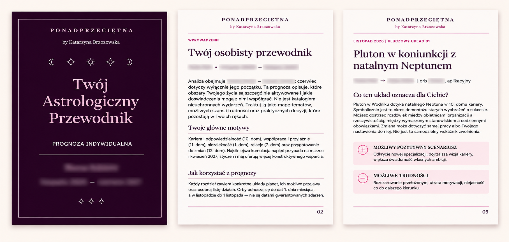

Analiza predykcyjna
6 lub 12 miesięcy
Zapytaj o analizę →Astroanaliza premium
Spersonalizowana analiza astrologiczna, która pomoże Ci lepiej zrozumieć siebie i spojrzeć z nowej perspektywy na karierę, biznes i życie.
Wybierz analizę ↓Dostępne analizy
6 lub 12 miesięcy
Zapytaj o analizę →Zapytaj o analizę →
Zapytaj o analizę →
Zapytaj o analizę →
Jak to działa?
Bez konsultacji i umawiania spotkań. Gotowy raport PDF otrzymasz na swój adres e-mail.

W każdym raporcie otrzymujesz
Najczęściej zadawane pytania
Oto odpowiedzi na najczęstsze pytania.
Data, możliwie dokładna godzina i miejsce urodzenia oraz adres e-mail. W analizie biznesowej przyda się również opis Twojego biznesu lub pomysłu.
Skontaktuj się ze mną przed zamówieniem. Brak godziny ogranicza zakres interpretacji, zwłaszcza domów astrologicznych.
Indywidualny raport PDF zostanie wysłany na podany adres e-mail. Produkt nie obejmuje konsultacji.
Termin realizacji zostanie podany przed zakupem.
Predykcyjna dotyczy interpretacji najbliższych 6 lub 12 miesięcy, analiza kariery – talentów i kierunku zawodowego, biznesowa – marki i biznesu, a ogólna – głównych obszarów życia.